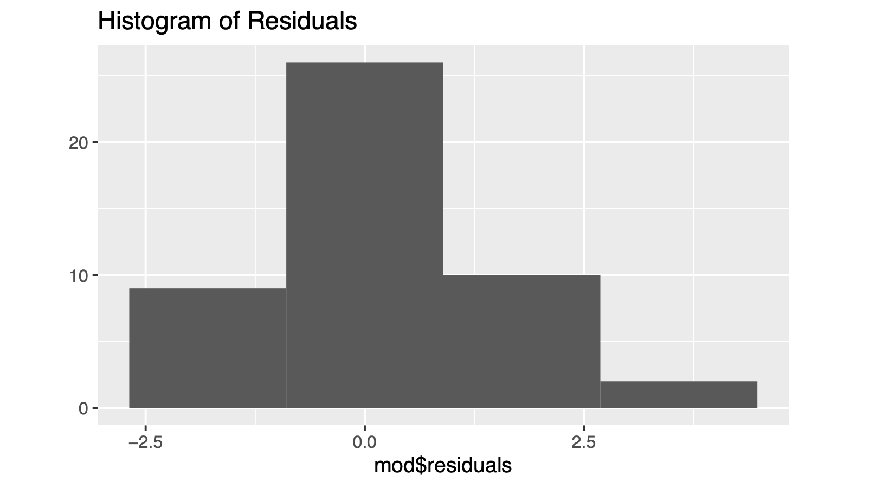

College Students’ Likelihood of Buying products based on different marketing offers
Title: College students’ likelihood of buying products based on different types of marketing offers
Introduction
There are numerous marketing strategies targeting college students, attempting to entice them to purchase goods with various offers such as discounts or special deals. This study aims to address the research question: “Are there any differences between the preferences among college students regarding the types of marketing offers they are most likely to buy? If so, which offers lead to higher likelihood of purchase?” The objective is to investigate whether students exhibit a preference for specific types of offers and, if so, to what extent one type may be favored over another. Understanding these preferences can inform marketers in tailoring their strategies to effectively target college students. I hypothesize that there exists a difference in college students’ preferences for one offer over another.
Method
The study utilized a randomized assignment procedure to ensure that each participant was exposed to only one of the three marketing tactics. The manipulation, involving exposure to different marketing offers, was delivered electronically through an online survey platform. The experimental units were college students taking SDS 290 class. 47 participants taking SDS 290 class were randomly assigned to one of the three conditions, wherein they were presented with a description of the assigned marketing offer and asked to provide their likelihood of buying accordingly.
To measure the response variable, the participants were asked to select on a scale of 1 to 5, how likely they were to buy the goods mentioned in each of the offers, 1 being very unlikely and 5 being most likely. There was 1 factor in total; the type of offer and 3 levels:
- “Buy 2, Get 1 Free”: Price: $10 for one bottle. In this deal, if you purchase two bottles of shampoo at the regular price, you’ll get an additional bottle for free.
- “Self Care Kit”: Price: $20 for the entire kit. This deal includes a bottle of shampoo, two Snickers bars for a snack, one soap for a refreshing shower, one handwash for cleanliness, and one face mask for some pampering.
- “Discount Bundle”: Price: $13 for two products; one bottle of shampoo and one conditioner. In this deal, you’ll get not only a bottle of shampoo but also a bottle of conditioner. All for the discounted price of $13.
The above 3 levels are referred to as Condition 1, Condition 2, and Condition 3 respectively throughout this report.
Results
The boxplot below shows the likelihood of purchase across the three conditions:
According to the boxplot, the variances between the three conditions don’t vary a lot.
| Condition | n | Mean | SD |
|---|---|---|---|
| Cond1 | 16 | 2.81 | 1.22 |
| Cond2 | 14 | 2.21 | 1.42 |
| Cond3 | 17 | 3.59 | 1.06 |
The table above shows descriptive statistics of the data. The largest SD is not more than two times as big as the smallest, so the condition of same standard deviations is satisfied.
The ANOVA test results showed statistically significant differences in students’ responses across the 3 different conditions, with F(2, 44) = 4.8487, p < 0.05.
The histogram of residuals shows that the residuals are centered around zero.
The QQ-plot shows some indication that the residuals are not quite normal, but the distribution of the residuals is not completely divergent from normal.
Conclusion
This analysis aimed to see if students favored certain offers over others when it came to making purchases. The analysis revealed statistically significant differences in the likelihood of purchase across the three conditions: “Buy 2, Get 1 Free,” “Self Care Kit,” and “Discount Bundle.” Specifically, the Fisher’s LSD test indicated a significant difference in likelihood to buy between Condition 2 (Self Care Kit) and Condition 3 (Discount Bundle).
The R-squared value tells us that the marketing offers explain a moderate portion of the variability observed in the students’ responses. According to our analysis, the “Buy 2, Get 1 Free” offer tends to be more appealing than the “Self Care Kit” offer, but it is not significantly different from the “Discount Bundle” offer in terms of likelihood of purchase.
However, it’s crucial to acknowledge the limitations of our study. While the ANOVA results suggest significant differences, our analysis is based on a relatively small dataset of 47 participants. Furthermore, although efforts were made to ensure the assumptions of ANOVA were met, there may still be unaccounted-for variables or biases that could affect the results.
To improve the robustness of future studies, increasing the sample size and diversifying the participant pool could provide a more comprehensive understanding of college students’ preferences regarding marketing offers. Additionally, conducting similar studies across different demographics could help generalize the findings beyond the scope of this specific investigation.